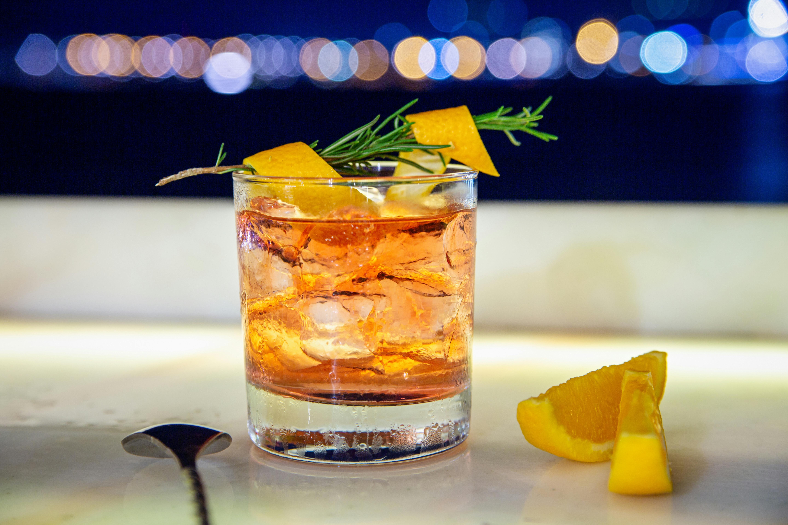

Tequila Old Fashioned - Photo by Denys Gromov,
Pexels.com
Rate This Recipe
Conversion
Ingredients
2 oz anejo tequila
1/2 oz cinnamon-orange simple syrup (see below)
2 to 3 dashes orange bitters
Large ice cube or sphere
Optional: dash of mole bitters or phinch of smoked salt
Key Ingredient: Cinnamon-Orange Simple Syrup
1/2 cup water
1/2 cup sugar
Zest of one orange
(use a vegetable peeler for thick strips)
1 cinnamon stick
Equipment
One chilled lowball glass or whiskey glass
Small saucepan for the simple syrup
Vegetable peeler or paring knife
Bar spoon
Directions
Make the Cinnamon-Orange Syrup: In a small saucepan,
add water, sugar, orange peel, and cinnamon stick. Bring to a
gentle simmer over medium heat, stir until sugar dissolves, and
steep for 15 minutes. Remove from heat, let cool, and strain into
a glass jar.
Prepare Your Glass: Place a large ice cube in a
rocks glass. If you prefer, chill the glass in the freezer for 10
minutes beforehand.
Add the Syrup and Bitters: Pour 1/2 oz of your
cooled cinnamon-orange syrup into the glass. Add 2 to 3 dashes of
orange bitters. If using mole bitters or smoked salt, add those
here too.
Pour in the Tequila: Measure and pour in 2 oz of
añejo tequila.
Stir Well: Use a bar spoon to stir the drink gently
for about 30 seconds. You want it chilled and just slightly
diluted.
Garnish and Serve: Use a vegetable peeler or paring
knife to cut a strip of orange peel. Hold it over the glass,
skin-side down, and give it a good twist to release the oils. Rub
the peel around the rim and drop it in.